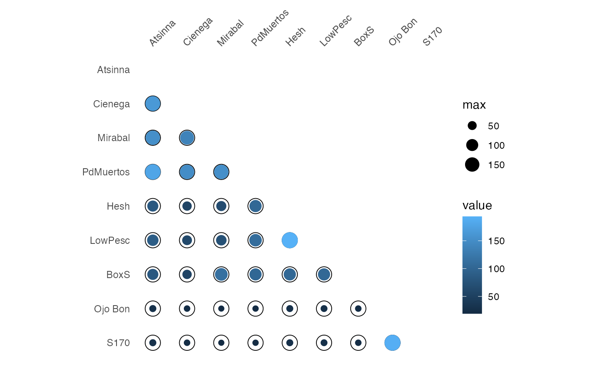

Similarity
similarity(object, ...) # S4 method for CountMatrix similarity( object, method = c("brainerd", "bray", "jaccard", "morisita", "sorenson", "binomial"), ... ) # S4 method for IncidenceMatrix similarity(object, method = c("jaccard", "sorenson"), ...)
| object | A \(m \times p\) matrix of count data. |
|---|---|
| ... | Further arguments to be passed to internal methods. |
| method | A |
similarity returns a dist object.
\(\beta\)-diversity can be measured by addressing similarity between pairs of samples/cases (Brainerd-Robinson, Jaccard, Morisita-Horn and Sorenson indices). Similarity between pairs of taxa/types can be measured by assessing the degree of co-occurrence (binomial co-occurrence).
Jaccard, Morisita-Horn and Sorenson indices provide a scale of similarity
from 0-1 where 1 is perfect similarity and 0 is
no similarity. The Brainerd-Robinson index is scaled between 0 and
200. The Binomial co-occurrence assessment approximates a Z-score.
Binomial co-occurrence assessment. This assesses the degree of co-occurrence between taxa/types within a dataset. The strongest associations are shown by large positive numbers, the strongest segregations by large negative numbers.
Brainerd-Robinson quantitative index. This is a city-block metric of similarity between pairs of samples/cases.
Sorenson quantitative index (Bray and Curtis modified version of the Sorenson index).
Jaccard qualitative index.
Morisita-Horn quantitative index.
Sorenson qualitative index.
Brainerd, G. W. (1951). The Place of Chronological Ordering in Archaeological Analysis. American Antiquity, 16(04), 301-313. doi: 10.2307/276979 .
Bray, J. R. & Curtis, J. T. (1957). An Ordination of the Upland Forest Communities of Southern Wisconsin. Ecological Monographs, 27(4), 325-349. doi: 10.2307/1942268 .
Kintigh, K. (2006). Ceramic Dating and Type Associations. In J. Hantman and R. Most (eds.), Managing Archaeological Data: Essays in Honor of Sylvia W. Gaines. Anthropological Research Paper, 57. Tempe, AZ: Arizona State University, p. 17-26.
Magurran, A. E. (1988). Ecological Diversity and its Measurement. Princeton, NJ: Princeton University Press. doi: 10.1007/978-94-015-7358-0 .
Robinson, W. S. (1951). A Method for Chronologically Ordering Archaeological Deposits. American Antiquity, 16(04), 293-301. doi: 10.2307/276978 .
Other diversity:
heterogeneity-index,
richness-index,
turnover-index
N. Frerebeau
## Data from Huntley 2008 ceramics <- CountMatrix( data = c(16, 9, 3, 0, 1, 13, 3, 2, 0, 0, 9, 5, 2, 5, 0, 14, 12, 3, 0, 0, 0, 26, 4, 0, 0, 1, 26, 4, 0, 0, 0, 11, 3, 13, 0, 0, 0, 17, 0, 16, 0, 0, 18, 0, 14), nrow = 9, byrow = TRUE ) rownames(ceramics) <- c("Atsinna", "Cienega", "Mirabal", "PdMuertos", "Hesh", "LowPesc", "BoxS", "Ojo Bon", "S170") colnames(ceramics) <- c("DLH-1", "DLH-2a", "DLH-2b", "DLH-2c", "DLH-4") ## Brainerd-Robinson measure (count data) C <- similarity(ceramics, "brainerd") plot_spot(C)## Data from Magurran 1988, p. 166 data("birds", package = "folio") ## Plot spot diagram birds <- as_count(birds) ## Jaccard measure (presence/absence data) similarity(birds, "jaccard") # 0.46#> Spotted ratcatcher Killer quail Riff raff Slyneck Oat crake #> Killer quail 0.6666667 #> Riff raff 0.6666667 1.0000000 #> Slyneck 0.6666667 1.0000000 1.0000000 #> Oat crake 0.6666667 1.0000000 1.0000000 1.0000000 #> Cold start 0.6666667 1.0000000 1.0000000 1.0000000 1.0000000 #> Big dipper 0.6666667 1.0000000 1.0000000 1.0000000 1.0000000 #> Shylark 0.6666667 1.0000000 1.0000000 1.0000000 1.0000000 #> Startling 0.6666667 1.0000000 1.0000000 1.0000000 1.0000000 #> Deadwing 0.6666667 1.0000000 1.0000000 1.0000000 1.0000000 #> Crook 0.6666667 1.0000000 1.0000000 1.0000000 1.0000000 #> Nightcap 0.6666667 1.0000000 1.0000000 1.0000000 1.0000000 #> Golden lover 0.6666667 1.0000000 1.0000000 1.0000000 1.0000000 #> Baby bunting 0.6666667 1.0000000 1.0000000 1.0000000 1.0000000 #> Mute swain 0.6666667 1.0000000 1.0000000 1.0000000 1.0000000 #> Chinese kite 1.0000000 0.6666667 0.6666667 0.6666667 0.6666667 #> Brownie owl 0.6666667 1.0000000 1.0000000 1.0000000 1.0000000 #> Hen hurrier 0.6666667 1.0000000 1.0000000 1.0000000 1.0000000 #> Grrrr falcon 1.0000000 0.6666667 0.6666667 0.6666667 0.6666667 #> Gosh hawk 0.6666667 1.0000000 1.0000000 1.0000000 1.0000000 #> Cough 1.0000000 0.6666667 0.6666667 0.6666667 0.6666667 #> Flapwing 0.6666667 1.0000000 1.0000000 1.0000000 1.0000000 #> Not 1.0000000 0.6666667 0.6666667 0.6666667 0.6666667 #> Bar-tailed nitwit 1.0000000 0.6666667 0.6666667 0.6666667 0.6666667 #> Snoop 1.0000000 0.6666667 0.6666667 0.6666667 0.6666667 #> Funny tern 0.6666667 1.0000000 1.0000000 1.0000000 1.0000000 #> Cut throat 1.0000000 0.6666667 0.6666667 0.6666667 0.6666667 #> Throttled dove 1.0000000 0.6666667 0.6666667 0.6666667 0.6666667 #> Ribbon 0.6666667 1.0000000 1.0000000 1.0000000 1.0000000 #> Backchat 0.6666667 1.0000000 1.0000000 1.0000000 1.0000000 #> Missile thrush 0.6666667 1.0000000 1.0000000 1.0000000 1.0000000 #> Cold tit 0.6666667 1.0000000 1.0000000 1.0000000 1.0000000 #> Twit 0.6666667 1.0000000 1.0000000 1.0000000 1.0000000 #> Yellow spanner 0.6666667 1.0000000 1.0000000 1.0000000 1.0000000 #> Born howl 0.6666667 1.0000000 1.0000000 1.0000000 1.0000000 #> Cold start Big dipper Shylark Startling Deadwing Crook #> Killer quail #> Riff raff #> Slyneck #> Oat crake #> Cold start #> Big dipper 1.0000000 #> Shylark 1.0000000 1.0000000 #> Startling 1.0000000 1.0000000 1.0000000 #> Deadwing 1.0000000 1.0000000 1.0000000 1.0000000 #> Crook 1.0000000 1.0000000 1.0000000 1.0000000 1.0000000 #> Nightcap 1.0000000 1.0000000 1.0000000 1.0000000 1.0000000 1.0000000 #> Golden lover 1.0000000 1.0000000 1.0000000 1.0000000 1.0000000 1.0000000 #> Baby bunting 1.0000000 1.0000000 1.0000000 1.0000000 1.0000000 1.0000000 #> Mute swain 1.0000000 1.0000000 1.0000000 1.0000000 1.0000000 1.0000000 #> Chinese kite 0.6666667 0.6666667 0.6666667 0.6666667 0.6666667 0.6666667 #> Brownie owl 1.0000000 1.0000000 1.0000000 1.0000000 1.0000000 1.0000000 #> Hen hurrier 1.0000000 1.0000000 1.0000000 1.0000000 1.0000000 1.0000000 #> Grrrr falcon 0.6666667 0.6666667 0.6666667 0.6666667 0.6666667 0.6666667 #> Gosh hawk 1.0000000 1.0000000 1.0000000 1.0000000 1.0000000 1.0000000 #> Cough 0.6666667 0.6666667 0.6666667 0.6666667 0.6666667 0.6666667 #> Flapwing 1.0000000 1.0000000 1.0000000 1.0000000 1.0000000 1.0000000 #> Not 0.6666667 0.6666667 0.6666667 0.6666667 0.6666667 0.6666667 #> Bar-tailed nitwit 0.6666667 0.6666667 0.6666667 0.6666667 0.6666667 0.6666667 #> Snoop 0.6666667 0.6666667 0.6666667 0.6666667 0.6666667 0.6666667 #> Funny tern 1.0000000 1.0000000 1.0000000 1.0000000 1.0000000 1.0000000 #> Cut throat 0.6666667 0.6666667 0.6666667 0.6666667 0.6666667 0.6666667 #> Throttled dove 0.6666667 0.6666667 0.6666667 0.6666667 0.6666667 0.6666667 #> Ribbon 1.0000000 1.0000000 1.0000000 1.0000000 1.0000000 1.0000000 #> Backchat 1.0000000 1.0000000 1.0000000 1.0000000 1.0000000 1.0000000 #> Missile thrush 1.0000000 1.0000000 1.0000000 1.0000000 1.0000000 1.0000000 #> Cold tit 1.0000000 1.0000000 1.0000000 1.0000000 1.0000000 1.0000000 #> Twit 1.0000000 1.0000000 1.0000000 1.0000000 1.0000000 1.0000000 #> Yellow spanner 1.0000000 1.0000000 1.0000000 1.0000000 1.0000000 1.0000000 #> Born howl 1.0000000 1.0000000 1.0000000 1.0000000 1.0000000 1.0000000 #> Nightcap Golden lover Baby bunting Mute swain Chinese kite #> Killer quail #> Riff raff #> Slyneck #> Oat crake #> Cold start #> Big dipper #> Shylark #> Startling #> Deadwing #> Crook #> Nightcap #> Golden lover 1.0000000 #> Baby bunting 1.0000000 1.0000000 #> Mute swain 1.0000000 1.0000000 1.0000000 #> Chinese kite 0.6666667 0.6666667 0.6666667 0.6666667 #> Brownie owl 1.0000000 1.0000000 1.0000000 1.0000000 0.6666667 #> Hen hurrier 1.0000000 1.0000000 1.0000000 1.0000000 0.6666667 #> Grrrr falcon 0.6666667 0.6666667 0.6666667 0.6666667 1.0000000 #> Gosh hawk 1.0000000 1.0000000 1.0000000 1.0000000 0.6666667 #> Cough 0.6666667 0.6666667 0.6666667 0.6666667 1.0000000 #> Flapwing 1.0000000 1.0000000 1.0000000 1.0000000 0.6666667 #> Not 0.6666667 0.6666667 0.6666667 0.6666667 1.0000000 #> Bar-tailed nitwit 0.6666667 0.6666667 0.6666667 0.6666667 1.0000000 #> Snoop 0.6666667 0.6666667 0.6666667 0.6666667 1.0000000 #> Funny tern 1.0000000 1.0000000 1.0000000 1.0000000 0.6666667 #> Cut throat 0.6666667 0.6666667 0.6666667 0.6666667 1.0000000 #> Throttled dove 0.6666667 0.6666667 0.6666667 0.6666667 1.0000000 #> Ribbon 1.0000000 1.0000000 1.0000000 1.0000000 0.6666667 #> Backchat 1.0000000 1.0000000 1.0000000 1.0000000 0.6666667 #> Missile thrush 1.0000000 1.0000000 1.0000000 1.0000000 0.6666667 #> Cold tit 1.0000000 1.0000000 1.0000000 1.0000000 0.6666667 #> Twit 1.0000000 1.0000000 1.0000000 1.0000000 0.6666667 #> Yellow spanner 1.0000000 1.0000000 1.0000000 1.0000000 0.6666667 #> Born howl 1.0000000 1.0000000 1.0000000 1.0000000 0.6666667 #> Brownie owl Hen hurrier Grrrr falcon Gosh hawk Cough #> Killer quail #> Riff raff #> Slyneck #> Oat crake #> Cold start #> Big dipper #> Shylark #> Startling #> Deadwing #> Crook #> Nightcap #> Golden lover #> Baby bunting #> Mute swain #> Chinese kite #> Brownie owl #> Hen hurrier 1.0000000 #> Grrrr falcon 0.6666667 0.6666667 #> Gosh hawk 1.0000000 1.0000000 0.6666667 #> Cough 0.6666667 0.6666667 1.0000000 0.6666667 #> Flapwing 1.0000000 1.0000000 0.6666667 1.0000000 0.6666667 #> Not 0.6666667 0.6666667 1.0000000 0.6666667 1.0000000 #> Bar-tailed nitwit 0.6666667 0.6666667 1.0000000 0.6666667 1.0000000 #> Snoop 0.6666667 0.6666667 1.0000000 0.6666667 1.0000000 #> Funny tern 1.0000000 1.0000000 0.6666667 1.0000000 0.6666667 #> Cut throat 0.6666667 0.6666667 1.0000000 0.6666667 1.0000000 #> Throttled dove 0.6666667 0.6666667 1.0000000 0.6666667 1.0000000 #> Ribbon 1.0000000 1.0000000 0.6666667 1.0000000 0.6666667 #> Backchat 1.0000000 1.0000000 0.6666667 1.0000000 0.6666667 #> Missile thrush 1.0000000 1.0000000 0.6666667 1.0000000 0.6666667 #> Cold tit 1.0000000 1.0000000 0.6666667 1.0000000 0.6666667 #> Twit 1.0000000 1.0000000 0.6666667 1.0000000 0.6666667 #> Yellow spanner 1.0000000 1.0000000 0.6666667 1.0000000 0.6666667 #> Born howl 1.0000000 1.0000000 0.6666667 1.0000000 0.6666667 #> Flapwing Not Bar-tailed nitwit Snoop Funny tern #> Killer quail #> Riff raff #> Slyneck #> Oat crake #> Cold start #> Big dipper #> Shylark #> Startling #> Deadwing #> Crook #> Nightcap #> Golden lover #> Baby bunting #> Mute swain #> Chinese kite #> Brownie owl #> Hen hurrier #> Grrrr falcon #> Gosh hawk #> Cough #> Flapwing #> Not 0.6666667 #> Bar-tailed nitwit 0.6666667 1.0000000 #> Snoop 0.6666667 1.0000000 1.0000000 #> Funny tern 1.0000000 0.6666667 0.6666667 0.6666667 #> Cut throat 0.6666667 1.0000000 1.0000000 1.0000000 0.6666667 #> Throttled dove 0.6666667 1.0000000 1.0000000 1.0000000 0.6666667 #> Ribbon 1.0000000 0.6666667 0.6666667 0.6666667 1.0000000 #> Backchat 1.0000000 0.6666667 0.6666667 0.6666667 1.0000000 #> Missile thrush 1.0000000 0.6666667 0.6666667 0.6666667 1.0000000 #> Cold tit 1.0000000 0.6666667 0.6666667 0.6666667 1.0000000 #> Twit 1.0000000 0.6666667 0.6666667 0.6666667 1.0000000 #> Yellow spanner 1.0000000 0.6666667 0.6666667 0.6666667 1.0000000 #> Born howl 1.0000000 0.6666667 0.6666667 0.6666667 1.0000000 #> Cut throat Throttled dove Ribbon Backchat Missile thrush #> Killer quail #> Riff raff #> Slyneck #> Oat crake #> Cold start #> Big dipper #> Shylark #> Startling #> Deadwing #> Crook #> Nightcap #> Golden lover #> Baby bunting #> Mute swain #> Chinese kite #> Brownie owl #> Hen hurrier #> Grrrr falcon #> Gosh hawk #> Cough #> Flapwing #> Not #> Bar-tailed nitwit #> Snoop #> Funny tern #> Cut throat #> Throttled dove 1.0000000 #> Ribbon 0.6666667 0.6666667 #> Backchat 0.6666667 0.6666667 1.0000000 #> Missile thrush 0.6666667 0.6666667 1.0000000 1.0000000 #> Cold tit 0.6666667 0.6666667 1.0000000 1.0000000 1.0000000 #> Twit 0.6666667 0.6666667 1.0000000 1.0000000 1.0000000 #> Yellow spanner 0.6666667 0.6666667 1.0000000 1.0000000 1.0000000 #> Born howl 0.6666667 0.6666667 1.0000000 1.0000000 1.0000000 #> Cold tit Twit Yellow spanner #> Killer quail #> Riff raff #> Slyneck #> Oat crake #> Cold start #> Big dipper #> Shylark #> Startling #> Deadwing #> Crook #> Nightcap #> Golden lover #> Baby bunting #> Mute swain #> Chinese kite #> Brownie owl #> Hen hurrier #> Grrrr falcon #> Gosh hawk #> Cough #> Flapwing #> Not #> Bar-tailed nitwit #> Snoop #> Funny tern #> Cut throat #> Throttled dove #> Ribbon #> Backchat #> Missile thrush #> Cold tit #> Twit 1.0000000 #> Yellow spanner 1.0000000 1.0000000 #> Born howl 1.0000000 1.0000000 1.0000000## Sorenson measure (presence/absence data) similarity(birds, "sorenson") # 0.63#> Spotted ratcatcher Killer quail Riff raff Slyneck Oat crake #> Killer quail 0.8 #> Riff raff 0.8 1.0 #> Slyneck 0.8 1.0 1.0 #> Oat crake 0.8 1.0 1.0 1.0 #> Cold start 0.8 1.0 1.0 1.0 1.0 #> Big dipper 0.8 1.0 1.0 1.0 1.0 #> Shylark 0.8 1.0 1.0 1.0 1.0 #> Startling 0.8 1.0 1.0 1.0 1.0 #> Deadwing 0.8 1.0 1.0 1.0 1.0 #> Crook 0.8 1.0 1.0 1.0 1.0 #> Nightcap 0.8 1.0 1.0 1.0 1.0 #> Golden lover 0.8 1.0 1.0 1.0 1.0 #> Baby bunting 0.8 1.0 1.0 1.0 1.0 #> Mute swain 0.8 1.0 1.0 1.0 1.0 #> Chinese kite 1.0 0.8 0.8 0.8 0.8 #> Brownie owl 0.8 1.0 1.0 1.0 1.0 #> Hen hurrier 0.8 1.0 1.0 1.0 1.0 #> Grrrr falcon 1.0 0.8 0.8 0.8 0.8 #> Gosh hawk 0.8 1.0 1.0 1.0 1.0 #> Cough 1.0 0.8 0.8 0.8 0.8 #> Flapwing 0.8 1.0 1.0 1.0 1.0 #> Not 1.0 0.8 0.8 0.8 0.8 #> Bar-tailed nitwit 1.0 0.8 0.8 0.8 0.8 #> Snoop 1.0 0.8 0.8 0.8 0.8 #> Funny tern 0.8 1.0 1.0 1.0 1.0 #> Cut throat 1.0 0.8 0.8 0.8 0.8 #> Throttled dove 1.0 0.8 0.8 0.8 0.8 #> Ribbon 0.8 1.0 1.0 1.0 1.0 #> Backchat 0.8 1.0 1.0 1.0 1.0 #> Missile thrush 0.8 1.0 1.0 1.0 1.0 #> Cold tit 0.8 1.0 1.0 1.0 1.0 #> Twit 0.8 1.0 1.0 1.0 1.0 #> Yellow spanner 0.8 1.0 1.0 1.0 1.0 #> Born howl 0.8 1.0 1.0 1.0 1.0 #> Cold start Big dipper Shylark Startling Deadwing Crook #> Killer quail #> Riff raff #> Slyneck #> Oat crake #> Cold start #> Big dipper 1.0 #> Shylark 1.0 1.0 #> Startling 1.0 1.0 1.0 #> Deadwing 1.0 1.0 1.0 1.0 #> Crook 1.0 1.0 1.0 1.0 1.0 #> Nightcap 1.0 1.0 1.0 1.0 1.0 1.0 #> Golden lover 1.0 1.0 1.0 1.0 1.0 1.0 #> Baby bunting 1.0 1.0 1.0 1.0 1.0 1.0 #> Mute swain 1.0 1.0 1.0 1.0 1.0 1.0 #> Chinese kite 0.8 0.8 0.8 0.8 0.8 0.8 #> Brownie owl 1.0 1.0 1.0 1.0 1.0 1.0 #> Hen hurrier 1.0 1.0 1.0 1.0 1.0 1.0 #> Grrrr falcon 0.8 0.8 0.8 0.8 0.8 0.8 #> Gosh hawk 1.0 1.0 1.0 1.0 1.0 1.0 #> Cough 0.8 0.8 0.8 0.8 0.8 0.8 #> Flapwing 1.0 1.0 1.0 1.0 1.0 1.0 #> Not 0.8 0.8 0.8 0.8 0.8 0.8 #> Bar-tailed nitwit 0.8 0.8 0.8 0.8 0.8 0.8 #> Snoop 0.8 0.8 0.8 0.8 0.8 0.8 #> Funny tern 1.0 1.0 1.0 1.0 1.0 1.0 #> Cut throat 0.8 0.8 0.8 0.8 0.8 0.8 #> Throttled dove 0.8 0.8 0.8 0.8 0.8 0.8 #> Ribbon 1.0 1.0 1.0 1.0 1.0 1.0 #> Backchat 1.0 1.0 1.0 1.0 1.0 1.0 #> Missile thrush 1.0 1.0 1.0 1.0 1.0 1.0 #> Cold tit 1.0 1.0 1.0 1.0 1.0 1.0 #> Twit 1.0 1.0 1.0 1.0 1.0 1.0 #> Yellow spanner 1.0 1.0 1.0 1.0 1.0 1.0 #> Born howl 1.0 1.0 1.0 1.0 1.0 1.0 #> Nightcap Golden lover Baby bunting Mute swain Chinese kite #> Killer quail #> Riff raff #> Slyneck #> Oat crake #> Cold start #> Big dipper #> Shylark #> Startling #> Deadwing #> Crook #> Nightcap #> Golden lover 1.0 #> Baby bunting 1.0 1.0 #> Mute swain 1.0 1.0 1.0 #> Chinese kite 0.8 0.8 0.8 0.8 #> Brownie owl 1.0 1.0 1.0 1.0 0.8 #> Hen hurrier 1.0 1.0 1.0 1.0 0.8 #> Grrrr falcon 0.8 0.8 0.8 0.8 1.0 #> Gosh hawk 1.0 1.0 1.0 1.0 0.8 #> Cough 0.8 0.8 0.8 0.8 1.0 #> Flapwing 1.0 1.0 1.0 1.0 0.8 #> Not 0.8 0.8 0.8 0.8 1.0 #> Bar-tailed nitwit 0.8 0.8 0.8 0.8 1.0 #> Snoop 0.8 0.8 0.8 0.8 1.0 #> Funny tern 1.0 1.0 1.0 1.0 0.8 #> Cut throat 0.8 0.8 0.8 0.8 1.0 #> Throttled dove 0.8 0.8 0.8 0.8 1.0 #> Ribbon 1.0 1.0 1.0 1.0 0.8 #> Backchat 1.0 1.0 1.0 1.0 0.8 #> Missile thrush 1.0 1.0 1.0 1.0 0.8 #> Cold tit 1.0 1.0 1.0 1.0 0.8 #> Twit 1.0 1.0 1.0 1.0 0.8 #> Yellow spanner 1.0 1.0 1.0 1.0 0.8 #> Born howl 1.0 1.0 1.0 1.0 0.8 #> Brownie owl Hen hurrier Grrrr falcon Gosh hawk Cough Flapwing #> Killer quail #> Riff raff #> Slyneck #> Oat crake #> Cold start #> Big dipper #> Shylark #> Startling #> Deadwing #> Crook #> Nightcap #> Golden lover #> Baby bunting #> Mute swain #> Chinese kite #> Brownie owl #> Hen hurrier 1.0 #> Grrrr falcon 0.8 0.8 #> Gosh hawk 1.0 1.0 0.8 #> Cough 0.8 0.8 1.0 0.8 #> Flapwing 1.0 1.0 0.8 1.0 0.8 #> Not 0.8 0.8 1.0 0.8 1.0 0.8 #> Bar-tailed nitwit 0.8 0.8 1.0 0.8 1.0 0.8 #> Snoop 0.8 0.8 1.0 0.8 1.0 0.8 #> Funny tern 1.0 1.0 0.8 1.0 0.8 1.0 #> Cut throat 0.8 0.8 1.0 0.8 1.0 0.8 #> Throttled dove 0.8 0.8 1.0 0.8 1.0 0.8 #> Ribbon 1.0 1.0 0.8 1.0 0.8 1.0 #> Backchat 1.0 1.0 0.8 1.0 0.8 1.0 #> Missile thrush 1.0 1.0 0.8 1.0 0.8 1.0 #> Cold tit 1.0 1.0 0.8 1.0 0.8 1.0 #> Twit 1.0 1.0 0.8 1.0 0.8 1.0 #> Yellow spanner 1.0 1.0 0.8 1.0 0.8 1.0 #> Born howl 1.0 1.0 0.8 1.0 0.8 1.0 #> Not Bar-tailed nitwit Snoop Funny tern Cut throat #> Killer quail #> Riff raff #> Slyneck #> Oat crake #> Cold start #> Big dipper #> Shylark #> Startling #> Deadwing #> Crook #> Nightcap #> Golden lover #> Baby bunting #> Mute swain #> Chinese kite #> Brownie owl #> Hen hurrier #> Grrrr falcon #> Gosh hawk #> Cough #> Flapwing #> Not #> Bar-tailed nitwit 1.0 #> Snoop 1.0 1.0 #> Funny tern 0.8 0.8 0.8 #> Cut throat 1.0 1.0 1.0 0.8 #> Throttled dove 1.0 1.0 1.0 0.8 1.0 #> Ribbon 0.8 0.8 0.8 1.0 0.8 #> Backchat 0.8 0.8 0.8 1.0 0.8 #> Missile thrush 0.8 0.8 0.8 1.0 0.8 #> Cold tit 0.8 0.8 0.8 1.0 0.8 #> Twit 0.8 0.8 0.8 1.0 0.8 #> Yellow spanner 0.8 0.8 0.8 1.0 0.8 #> Born howl 0.8 0.8 0.8 1.0 0.8 #> Throttled dove Ribbon Backchat Missile thrush Cold tit Twit #> Killer quail #> Riff raff #> Slyneck #> Oat crake #> Cold start #> Big dipper #> Shylark #> Startling #> Deadwing #> Crook #> Nightcap #> Golden lover #> Baby bunting #> Mute swain #> Chinese kite #> Brownie owl #> Hen hurrier #> Grrrr falcon #> Gosh hawk #> Cough #> Flapwing #> Not #> Bar-tailed nitwit #> Snoop #> Funny tern #> Cut throat #> Throttled dove #> Ribbon 0.8 #> Backchat 0.8 1.0 #> Missile thrush 0.8 1.0 1.0 #> Cold tit 0.8 1.0 1.0 1.0 #> Twit 0.8 1.0 1.0 1.0 1.0 #> Yellow spanner 0.8 1.0 1.0 1.0 1.0 1.0 #> Born howl 0.8 1.0 1.0 1.0 1.0 1.0 #> Yellow spanner #> Killer quail #> Riff raff #> Slyneck #> Oat crake #> Cold start #> Big dipper #> Shylark #> Startling #> Deadwing #> Crook #> Nightcap #> Golden lover #> Baby bunting #> Mute swain #> Chinese kite #> Brownie owl #> Hen hurrier #> Grrrr falcon #> Gosh hawk #> Cough #> Flapwing #> Not #> Bar-tailed nitwit #> Snoop #> Funny tern #> Cut throat #> Throttled dove #> Ribbon #> Backchat #> Missile thrush #> Cold tit #> Twit #> Yellow spanner #> Born howl 1.0# Jaccard measure (Bray's formula ; count data) similarity(birds, "bray") # 0.44#> Spotted ratcatcher Killer quail Riff raff Slyneck #> Killer quail 0.01595745 #> Riff raff 0.40000000 0.06233766 #> Slyneck 0.60000000 0.03684211 0.73684211 #> Oat crake 0.13043478 0.20192308 0.43636364 0.28000000 #> Cold start 0.24000000 0.10126582 0.52941176 0.48275862 #> Big dipper 0.16216216 0.09828010 0.30434783 0.29268293 #> Shylark 0.20000000 0.13500000 0.56410256 0.41176471 #> Startling 0.09836066 0.17169374 0.34285714 0.21538462 #> Deadwing 0.57142857 0.02122016 0.50000000 0.72727273 #> Crook 0.60000000 0.03684211 0.63157895 0.57142857 #> Nightcap 0.08333333 0.04072398 0.14814815 0.10526316 #> Golden lover 0.24000000 0.09620253 0.35294118 0.27586207 #> Baby bunting 0.26086957 0.09160305 0.31250000 0.29629630 #> Mute swain 0.30000000 0.08717949 0.41379310 0.41666667 #> Chinese kite 0.31578947 0.08226221 0.28571429 0.26086957 #> Brownie owl 0.17391304 0.03562341 0.37500000 0.37037037 #> Hen hurrier 0.13043478 0.09615385 0.21818182 0.16000000 #> Grrrr falcon 0.06060606 0.08102345 0.09259259 0.05825243 #> Gosh hawk 0.66666667 0.03166227 0.66666667 0.76923077 #> Cough 0.11764706 0.08076010 0.13333333 0.10909091 #> Flapwing 0.08955224 0.16933638 0.31578947 0.19718310 #> Not 0.26086957 0.03562341 0.31250000 0.22222222 #> Bar-tailed nitwit 0.04411765 0.03557312 0.06896552 0.04285714 #> Snoop 0.31578947 0.05141388 0.35714286 0.26086957 #> Funny tern 0.20000000 0.06000000 0.30769231 0.23529412 #> Cut throat 0.27272727 0.09693878 0.32258065 0.23076923 #> Throttled dove 0.15384615 0.09290954 0.20833333 0.13953488 #> Ribbon 0.23076923 0.10101010 0.34285714 0.26666667 #> Backchat 0.28571429 0.05115090 0.40000000 0.32000000 #> Missile thrush 0.35294118 0.05684755 0.46153846 0.38095238 #> Cold tit 0.20689655 0.11027569 0.63157895 0.42424242 #> Twit 0.16666667 0.13793103 0.53333333 0.35000000 #> Yellow spanner 0.05825243 0.12262156 0.21428571 0.13084112 #> Born howl 0.22222222 0.05037783 0.44444444 0.38709677 #> Oat crake Cold start Big dipper Shylark Startling #> Killer quail #> Riff raff #> Slyneck #> Oat crake #> Cold start 0.55384615 #> Big dipper 0.36363636 0.60714286 #> Shylark 0.65714286 0.73469388 0.59016393 #> Startling 0.63366337 0.55000000 0.56521739 0.63529412 #> Deadwing 0.17021277 0.30769231 0.21052632 0.25806452 0.12903226 #> Crook 0.28000000 0.48275862 0.29268293 0.35294118 0.21538462 #> Nightcap 0.17857143 0.24175824 0.13592233 0.14583333 0.37795276 #> Golden lover 0.40000000 0.72727273 0.75000000 0.65306122 0.55000000 #> Baby bunting 0.38095238 0.71428571 0.74074074 0.68085106 0.51282051 #> Mute swain 0.43333333 0.82051282 0.66666667 0.77272727 0.45333333 #> Chinese kite 0.37288136 0.73684211 0.64000000 0.69767442 0.43243243 #> Brownie owl 0.25396825 0.42857143 0.18518519 0.21276596 0.51282051 #> Hen hurrier 0.34883721 0.58461538 0.75324675 0.45714286 0.75247525 #> Grrrr falcon 0.20143885 0.30508475 0.47692308 0.24390244 0.51948052 #> Gosh hawk 0.24489796 0.42857143 0.30000000 0.36363636 0.18750000 #> Cough 0.24175824 0.40000000 0.75609756 0.40000000 0.43396226 #> Flapwing 0.59813084 0.51162791 0.69387755 0.59340659 0.78688525 #> Not 0.25396825 0.42857143 0.18518519 0.21276596 0.51282051 #> Bar-tailed nitwit 0.11363636 0.14193548 0.08383234 0.08750000 0.25130890 #> Snoop 0.37288136 0.63157895 0.32000000 0.37209302 0.43243243 #> Funny tern 0.37142857 0.57142857 0.32786885 0.37037037 0.63529412 #> Cut throat 0.41935484 0.78048780 0.64150943 0.65217391 0.49350649 #> Throttled dove 0.35443038 0.58620690 0.88571429 0.47619048 0.55319149 #> Ribbon 0.42424242 0.75555556 0.73684211 0.64000000 0.56790123 #> Backchat 0.36065574 0.60000000 0.30769231 0.35555556 0.47368421 #> Missile thrush 0.42105263 0.72222222 0.37500000 0.43902439 0.38888889 #> Cold tit 0.66666667 0.70833333 0.40000000 0.75471698 0.61904762 #> Twit 0.60526316 0.80000000 0.59701493 0.80000000 0.72527473 #> Yellow spanner 0.33566434 0.36065574 0.46268657 0.39370079 0.63291139 #> Born howl 0.32835821 0.52173913 0.27586207 0.31372549 0.58536585 #> Deadwing Crook Nightcap Golden lover Baby bunting #> Killer quail #> Riff raff #> Slyneck #> Oat crake #> Cold start #> Big dipper #> Shylark #> Startling #> Deadwing #> Crook 0.54545455 #> Nightcap 0.08219178 0.18421053 #> Golden lover 0.23076923 0.48275862 0.17582418 #> Baby bunting 0.25000000 0.44444444 0.15730337 0.95238095 #> Mute swain 0.38095238 0.50000000 0.16279070 0.82051282 0.86486486 #> Chinese kite 0.20000000 0.43478261 0.14117647 0.84210526 0.88888889 #> Brownie owl 0.33333333 0.29629630 0.40449438 0.19047619 0.15000000 #> Hen hurrier 0.12765957 0.28000000 0.37500000 0.67692308 0.63492063 #> Grrrr falcon 0.04000000 0.11650485 0.78787879 0.35593220 0.32758621 #> Gosh hawk 0.80000000 0.76923077 0.13333333 0.35714286 0.38461538 #> Cough 0.07692308 0.18181818 0.10256410 0.57142857 0.55882353 #> Flapwing 0.11764706 0.19718310 0.21052632 0.51162791 0.47619048 #> Not 0.16666667 0.44444444 0.44943820 0.28571429 0.25000000 #> Bar-tailed nitwit 0.02919708 0.08571429 0.67326733 0.10322581 0.09150327 #> Snoop 0.20000000 0.52173913 0.32941176 0.47368421 0.44444444 #> Funny tern 0.19354839 0.41176471 0.50000000 0.44897959 0.42553191 #> Cut throat 0.17391304 0.46153846 0.18181818 0.87804878 0.87179487 #> Throttled dove 0.10000000 0.27906977 0.17142857 0.72413793 0.67857143 #> Ribbon 0.22222222 0.46666667 0.19565217 0.97777778 0.93023256 #> Backchat 0.27272727 0.56000000 0.39080460 0.45000000 0.42105263 #> Missile thrush 0.33333333 0.66666667 0.28915663 0.55555556 0.52941176 #> Cold tit 0.26666667 0.42424242 0.27368421 0.45833333 0.43478261 #> Twit 0.21621622 0.35000000 0.27450980 0.69090909 0.67924528 #> Yellow spanner 0.07692308 0.13084112 0.81656805 0.36065574 0.33333333 #> Born howl 0.28571429 0.45161290 0.47311828 0.30434783 0.27272727 #> Mute swain Chinese kite Brownie owl Hen hurrier Grrrr falcon #> Killer quail #> Riff raff #> Slyneck #> Oat crake #> Cold start #> Big dipper #> Shylark #> Startling #> Deadwing #> Crook #> Nightcap #> Golden lover #> Baby bunting #> Mute swain #> Chinese kite 0.90909091 #> Brownie owl 0.21621622 0.11111111 #> Hen hurrier 0.53333333 0.54237288 0.53968254 #> Grrrr falcon 0.26548673 0.28571429 0.29310345 0.60431655 #> Gosh hawk 0.52173913 0.36363636 0.30769231 0.20408163 0.07843137 #> Cough 0.46153846 0.50000000 0.05882353 0.61538462 0.51388889 #> Flapwing 0.41975309 0.40000000 0.28571429 0.67289720 0.55000000 #> Not 0.27027027 0.27777778 0.85000000 0.60317460 0.34482759 #> Bar-tailed nitwit 0.09333333 0.09395973 0.22222222 0.23863636 0.57641921 #> Snoop 0.48484848 0.50000000 0.55555556 0.54237288 0.28571429 #> Funny tern 0.45454545 0.41860465 0.76595745 0.68571429 0.42276423 #> Cut throat 0.83333333 0.91428571 0.20512821 0.61290323 0.33043478 #> Throttled dove 0.56603774 0.61538462 0.17857143 0.78481013 0.54545455 #> Ribbon 0.80000000 0.82051282 0.23255814 0.69696970 0.36974790 #> Backchat 0.45714286 0.41176471 0.68421053 0.59016393 0.29824561 #> Missile thrush 0.58064516 0.53333333 0.47058824 0.49122807 0.23636364 #> Cold tit 0.51162791 0.42857143 0.47826087 0.46376812 0.24590164 #> Twit 0.68000000 0.65306122 0.45283019 0.65789474 0.37209302 #> Yellow spanner 0.29059829 0.27586207 0.33333333 0.60139860 0.88775510 #> Born howl 0.34146341 0.25000000 0.90909091 0.59701493 0.35000000 #> Gosh hawk Cough Flapwing Not Bar-tailed nitwit #> Killer quail #> Riff raff #> Slyneck #> Oat crake #> Cold start #> Big dipper #> Shylark #> Startling #> Deadwing #> Crook #> Nightcap #> Golden lover #> Baby bunting #> Mute swain #> Chinese kite #> Brownie owl #> Hen hurrier #> Grrrr falcon #> Gosh hawk #> Cough 0.14814815 #> Flapwing 0.17142857 0.69642857 #> Not 0.30769231 0.14705882 0.28571429 #> Bar-tailed nitwit 0.05755396 0.07734807 0.14213198 0.26143791 #> Snoop 0.36363636 0.25000000 0.37500000 0.72222222 0.20134228 #> Funny tern 0.30303030 0.24000000 0.37362637 0.85106383 0.30000000 #> Cut throat 0.32000000 0.50746269 0.45783133 0.35897436 0.11842105 #> Throttled dove 0.19047619 0.78571429 0.72000000 0.28571429 0.11834320 #> Ribbon 0.34482759 0.56338028 0.52873563 0.32558140 0.11538462 #> Backchat 0.41666667 0.21212121 0.36585366 0.78947368 0.22516556 #> Missile thrush 0.50000000 0.25806452 0.35897436 0.58823529 0.16326531 #> Cold tit 0.37500000 0.24324324 0.57777778 0.47826087 0.16352201 #> Twit 0.30769231 0.41975309 0.68041237 0.45283019 0.16867470 #> Yellow spanner 0.11320755 0.37837838 0.54878049 0.33333333 0.59227468 #> Born howl 0.40000000 0.13888889 0.34090909 0.90909091 0.26751592 #> Snoop Funny tern Cut throat Throttled dove Ribbon #> Killer quail #> Riff raff #> Slyneck #> Oat crake #> Cold start #> Big dipper #> Shylark #> Startling #> Deadwing #> Crook #> Nightcap #> Golden lover #> Baby bunting #> Mute swain #> Chinese kite #> Brownie owl #> Hen hurrier #> Grrrr falcon #> Gosh hawk #> Cough #> Flapwing #> Not #> Bar-tailed nitwit #> Snoop #> Funny tern 0.74418605 #> Cut throat 0.57142857 0.47826087 #> Throttled dove 0.42307692 0.38095238 0.69090909 #> Ribbon 0.51282051 0.48000000 0.90476190 0.74576271 #> Backchat 0.88235294 0.80000000 0.48648649 0.37037037 0.48780488 #> Missile thrush 0.86666667 0.68292683 0.60606061 0.44000000 0.59459459 #> Cold tit 0.66666667 0.60377358 0.48888889 0.38709677 0.48979592 #> Twit 0.61224490 0.56666667 0.73076923 0.57971014 0.71428571 #> Yellow spanner 0.27586207 0.42519685 0.31932773 0.45588235 0.37398374 #> Born howl 0.65000000 0.86274510 0.32558140 0.26666667 0.34042553 #> Backchat Missile thrush Cold tit Twit #> Killer quail #> Riff raff #> Slyneck #> Oat crake #> Cold start #> Big dipper #> Shylark #> Startling #> Deadwing #> Crook #> Nightcap #> Golden lover #> Baby bunting #> Mute swain #> Chinese kite #> Brownie owl #> Hen hurrier #> Grrrr falcon #> Gosh hawk #> Cough #> Flapwing #> Not #> Bar-tailed nitwit #> Snoop #> Funny tern #> Cut throat #> Throttled dove #> Ribbon #> Backchat #> Missile thrush 0.81250000 #> Cold tit 0.63636364 0.70000000 #> Twit 0.58823529 0.59574468 0.81355932 #> Yellow spanner 0.30508475 0.24561404 0.39682540 0.49624060 #> Born howl 0.76190476 0.57894737 0.56000000 0.52631579 #> Yellow spanner #> Killer quail #> Riff raff #> Slyneck #> Oat crake #> Cold start #> Big dipper #> Shylark #> Startling #> Deadwing #> Crook #> Nightcap #> Golden lover #> Baby bunting #> Mute swain #> Chinese kite #> Brownie owl #> Hen hurrier #> Grrrr falcon #> Gosh hawk #> Cough #> Flapwing #> Not #> Bar-tailed nitwit #> Snoop #> Funny tern #> Cut throat #> Throttled dove #> Ribbon #> Backchat #> Missile thrush #> Cold tit #> Twit #> Yellow spanner #> Born howl 0.38709677# Morisita-Horn measure (count data) similarity(birds, "morisita") # 0.81#> Spotted ratcatcher Killer quail Riff raff Slyneck #> Killer quail 0.04290000 #> Riff raff 0.45070423 0.84862414 #> Slyneck 0.48387097 0.83492820 0.99769053 #> Oat crake 0.34673536 0.91647485 0.98520872 0.98317818 #> Cold start 0.94941995 0.29888642 0.67481078 0.70773443 #> Big dipper 0.89076593 0.14418839 0.45487194 0.50457410 #> Shylark 0.69973190 0.64849595 0.87955717 0.90905116 #> Startling 0.79887441 0.50568369 0.85413482 0.86278863 #> Deadwing 0.53731343 0.76276885 0.98275862 0.97777778 #> Crook 0.96774194 0.24397626 0.63741339 0.66666667 #> Nightcap 0.50572289 0.02779577 0.28156083 0.25151486 #> Golden lover 0.92404620 0.09755893 0.43408453 0.48231191 #> Baby bunting 0.89987839 0.10067534 0.42149866 0.47099368 #> Mute swain 0.90903503 0.18453266 0.50497205 0.55321020 #> Chinese kite 0.89800845 0.04561034 0.37276933 0.42212766 #> Brownie owl 0.49157943 0.19256972 0.42596349 0.39190072 #> Hen hurrier 0.99786996 0.07301888 0.48293530 0.51324395 #> Grrrr falcon 0.84345048 0.02944836 0.41155235 0.40930233 #> Gosh hawk 0.82352941 0.52518627 0.84745763 0.87378641 #> Cough 0.87106017 0.04529896 0.35727670 0.40747029 #> Flapwing 0.87253841 0.43469983 0.75945612 0.79515769 #> Not 0.64748201 0.01897282 0.33016508 0.30927835 #> Bar-tailed nitwit 0.47416749 0.01058669 0.25353470 0.22243746 #> Snoop 0.90122449 0.03302652 0.43293247 0.43861740 #> Funny tern 0.77078086 0.07411363 0.42895252 0.41792261 #> Cut throat 0.95226730 0.04569259 0.40672591 0.45268890 #> Throttled dove 0.92727273 0.04577224 0.39048811 0.43839542 #> Ribbon 0.94552139 0.09694589 0.44814548 0.49474187 #> Backchat 0.81656805 0.10348906 0.47394958 0.46775746 #> Missile thrush 0.95781072 0.13819132 0.54776655 0.56470588 #> Cold tit 0.65402844 0.66767760 0.94910591 0.95035461 #> Twit 0.87475149 0.44314038 0.80298894 0.82581495 #> Yellow spanner 0.75336438 0.16139052 0.50712786 0.49381939 #> Born howl 0.63091483 0.18163073 0.47686833 0.45236882 #> Oat crake Cold start Big dipper Shylark Startling #> Killer quail #> Riff raff #> Slyneck #> Oat crake #> Cold start 0.59105696 #> Big dipper 0.40994348 0.89120609 #> Shylark 0.86015411 0.87755474 0.79336527 #> Startling 0.76429105 0.91148089 0.66066796 0.86066990 #> Deadwing 0.93796864 0.73052363 0.46818013 0.85696846 0.92082724 #> Crook 0.54074800 0.99383984 0.86399675 0.82641014 0.91429840 #> Nightcap 0.16446025 0.39743232 0.11322786 0.11911092 0.53647275 #> Golden lover 0.37676613 0.90625000 0.99613681 0.77025319 0.67704788 #> Baby bunting 0.37172247 0.88442577 0.99862861 0.76513017 0.64683013 #> Mute swain 0.45559083 0.92331650 0.99649942 0.82780992 0.71150749 #> Chinese kite 0.31967849 0.86304124 0.99286142 0.72328506 0.61509862 #> Brownie owl 0.31661243 0.43432482 0.11139307 0.21579467 0.62664363 #> Hen hurrier 0.37552301 0.95655548 0.86883588 0.70883181 0.82918860 #> Grrrr falcon 0.27716454 0.75354562 0.52981219 0.43561467 0.77488974 #> Gosh hawk 0.78676787 0.95758929 0.80859758 0.96557246 0.95073308 #> Cough 0.31101640 0.83746942 0.99013286 0.71268390 0.58327073 #> Flapwing 0.70351268 0.97690011 0.89494747 0.95625313 0.89641910 #> Not 0.20195816 0.53865559 0.27262865 0.23233579 0.63775033 #> Bar-tailed nitwit 0.13876841 0.36161181 0.07982203 0.08505737 0.50138973 #> Snoop 0.30050972 0.82056908 0.62173051 0.50777191 0.80661026 #> Funny tern 0.29661786 0.68906687 0.43051585 0.38904110 0.76031388 #> Cut throat 0.33639830 0.91354927 0.98296605 0.73636519 0.68826686 #> Throttled dove 0.32885859 0.89053022 0.99087672 0.73218143 0.65260092 #> Ribbon 0.38324588 0.92615963 0.98967115 0.77410125 0.70785631 #> Backchat 0.34188074 0.75083038 0.49730255 0.46087581 0.80890591 #> Missile thrush 0.42728789 0.93013143 0.75056160 0.67703235 0.88955663 #> Cold tit 0.88437733 0.82029340 0.55894786 0.87858949 0.97139412 #> Twit 0.72078837 0.97538638 0.79451595 0.91291259 0.97564097 #> Yellow spanner 0.37866764 0.70245071 0.41924043 0.43855141 0.80598760 #> Born howl 0.35560488 0.57648680 0.26858323 0.33213424 0.73008930 #> Deadwing Crook Nightcap Golden lover Baby bunting #> Killer quail #> Riff raff #> Slyneck #> Oat crake #> Cold start #> Big dipper #> Shylark #> Startling #> Deadwing #> Crook 0.71111111 #> Nightcap 0.41779296 0.48016474 #> Golden lover 0.46210046 0.88789238 0.18334401 #> Baby bunting 0.44117647 0.86157381 0.13492965 0.99808011 #> Mute swain 0.52202020 0.89709763 0.14999176 0.99459268 0.99304752 #> Chinese kite 0.39751553 0.84425532 0.14518661 0.99491826 0.99760722 #> Brownie owl 0.55288462 0.50947093 0.97896053 0.17270956 0.12500000 #> Hen hurrier 0.57389854 0.97727273 0.53753288 0.90367829 0.87679000 #> Grrrr falcon 0.55172414 0.81860465 0.87250990 0.59137412 0.54781801 #> Gosh hawk 0.87272727 0.93203883 0.31471821 0.80713713 0.78910937 #> Cough 0.37475602 0.81494058 0.10006707 0.98815205 0.99457894 #> Flapwing 0.77909739 0.94807263 0.25067632 0.89231058 0.87887603 #> Not 0.47393365 0.61855670 0.98074243 0.34181149 0.29431438 #> Bar-tailed nitwit 0.38794432 0.44487493 0.99845460 0.15061763 0.10220219 #> Snoop 0.56637168 0.87723480 0.80968294 0.67875568 0.63784550 #> Funny tern 0.57067371 0.75885947 0.91891208 0.49337933 0.44764961 #> Cut throat 0.45082735 0.90537781 0.26085596 0.99529161 0.98870738 #> Throttled dove 0.42463958 0.87679083 0.20207563 0.99800347 0.99606915 #> Ribbon 0.48474204 0.91252390 0.23316062 0.99795808 0.99210233 #> Backchat 0.61180680 0.81424447 0.87872578 0.55627102 0.51177558 #> Missile thrush 0.65830721 0.96470588 0.67075120 0.79336627 0.75771140 #> Cold tit 0.98666667 0.80851064 0.46276215 0.56141869 0.53660152 #> Twit 0.85621622 0.96707277 0.43141286 0.80604328 0.78111964 #> Yellow spanner 0.64342536 0.76746454 0.90412862 0.47734692 0.43172691 #> Born howl 0.61132075 0.64798777 0.95449351 0.32891574 0.28183396 #> Mute swain Chinese kite Brownie owl Hen hurrier Grrrr falcon #> Killer quail #> Riff raff #> Slyneck #> Oat crake #> Cold start #> Big dipper #> Shylark #> Startling #> Deadwing #> Crook #> Nightcap #> Golden lover #> Baby bunting #> Mute swain #> Chinese kite 0.98299221 #> Brownie owl 0.15565192 0.12517666 #> Hen hurrier 0.89167814 0.87252436 0.53145105 #> Grrrr falcon 0.56342001 0.55248619 0.86729363 0.86564612 #> Gosh hawk 0.84984932 0.75358362 0.39536110 0.83908008 0.63396226 #> Cough 0.97612439 0.99811499 0.08080894 0.84311767 0.51019220 #> Flapwing 0.92654338 0.84875184 0.30905387 0.87773858 0.61477046 #> Not 0.30790904 0.30393921 0.96654275 0.67639401 0.94943240 #> Bar-tailed nitwit 0.11597445 0.11351490 0.97053926 0.50537184 0.84938624 #> Snoop 0.65383146 0.64044944 0.80468958 0.91950913 0.99248120 #> Funny tern 0.46795134 0.45105887 0.92391149 0.79890438 0.99126444 #> Cut throat 0.98321108 0.98874359 0.24076109 0.93372547 0.65512759 #> Throttled dove 0.98608339 0.99719567 0.18171876 0.90510276 0.60399190 #> Ribbon 0.99238579 0.98805761 0.22274950 0.92824558 0.63493889 #> Backchat 0.53584388 0.51178830 0.89166176 0.84404268 0.99507762 #> Missile thrush 0.78530739 0.74990952 0.68595729 0.97378926 0.93885602 #> Cold tit 0.61249521 0.49682152 0.58197033 0.68848111 0.64657534 #> Twit 0.83786868 0.75089027 0.50151753 0.89372329 0.74117084 #> Yellow spanner 0.46145847 0.42932235 0.93029350 0.78616825 0.97918006 #> Born howl 0.31214108 0.28085106 0.98129232 0.66812304 0.93870968 #> Gosh hawk Cough Flapwing Not Bar-tailed nitwit #> Killer quail #> Riff raff #> Slyneck #> Oat crake #> Cold start #> Big dipper #> Shylark #> Startling #> Deadwing #> Crook #> Nightcap #> Golden lover #> Baby bunting #> Mute swain #> Chinese kite #> Brownie owl #> Hen hurrier #> Grrrr falcon #> Gosh hawk #> Cough 0.73148744 #> Flapwing 0.98416818 0.83042740 #> Not 0.43659044 0.25927260 0.38810728 #> Bar-tailed nitwit 0.27895842 0.06840880 0.21474616 0.96989663 #> Snoop 0.69699903 0.60000000 0.69120654 0.90502499 0.78339684 #> Funny tern 0.58884758 0.40730238 0.54986903 0.97658016 0.89807196 #> Cut throat 0.79676579 0.97781123 0.87991243 0.41686256 0.22909091 #> Throttled dove 0.77720207 0.99074733 0.86685060 0.35976016 0.17036374 #> Ribbon 0.82419805 0.97751540 0.90375547 0.39029998 0.20037245 #> Backchat 0.65492958 0.46876875 0.62022541 0.95157539 0.85419932 #> Missile thrush 0.83424658 0.71319048 0.83638490 0.79168187 0.63845527 #> Cold tit 0.92441860 0.47020308 0.84529445 0.53973013 0.43010504 #> Twit 0.98726501 0.72289808 0.96846004 0.55504941 0.39523611 #> Yellow spanner 0.62930086 0.38568413 0.57641550 0.96223487 0.88079748 #> Born howl 0.52044610 0.23658396 0.44872075 0.97948078 0.93749816 #> Snoop Funny tern Cut throat Throttled dove Ribbon #> Killer quail #> Riff raff #> Slyneck #> Oat crake #> Cold start #> Big dipper #> Shylark #> Startling #> Deadwing #> Crook #> Nightcap #> Golden lover #> Baby bunting #> Mute swain #> Chinese kite #> Brownie owl #> Hen hurrier #> Grrrr falcon #> Gosh hawk #> Cough #> Flapwing #> Not #> Bar-tailed nitwit #> Snoop #> Funny tern 0.96911821 #> Cut throat 0.73635968 0.55972471 #> Throttled dove 0.68899522 0.50513347 0.99715112 #> Ribbon 0.71916261 0.53984126 0.99797896 0.99587187 #> Backchat 0.98362562 0.99529886 0.61747540 0.56459330 0.60133670 #> Missile thrush 0.97153445 0.89781053 0.83339358 0.79285497 0.82808561 #> Cold tit 0.66995074 0.65091454 0.55843772 0.52831749 0.58749219 #> Twit 0.79559097 0.69940918 0.81025324 0.78229040 0.83026481 #> Yellow spanner 0.95685302 0.99407911 0.53851164 0.48351784 0.52418783 #> Born howl 0.89530091 0.97564077 0.39429461 0.33667335 0.37788111 #> Backchat Missile thrush Cold tit Twit #> Killer quail #> Riff raff #> Slyneck #> Oat crake #> Cold start #> Big dipper #> Shylark #> Startling #> Deadwing #> Crook #> Nightcap #> Golden lover #> Baby bunting #> Mute swain #> Chinese kite #> Brownie owl #> Hen hurrier #> Grrrr falcon #> Gosh hawk #> Cough #> Flapwing #> Not #> Bar-tailed nitwit #> Snoop #> Funny tern #> Cut throat #> Throttled dove #> Ribbon #> Backchat #> Missile thrush 0.93377754 #> Cold tit 0.69703872 0.76300000 #> Twit 0.75925374 0.90656604 0.92341919 #> Yellow spanner 0.99344340 0.89735216 0.71432563 0.73325218 #> Born howl 0.95928278 0.80460929 0.66167216 0.62760376 #> Yellow spanner #> Killer quail #> Riff raff #> Slyneck #> Oat crake #> Cold start #> Big dipper #> Shylark #> Startling #> Deadwing #> Crook #> Nightcap #> Golden lover #> Baby bunting #> Mute swain #> Chinese kite #> Brownie owl #> Hen hurrier #> Grrrr falcon #> Gosh hawk #> Cough #> Flapwing #> Not #> Bar-tailed nitwit #> Snoop #> Funny tern #> Cut throat #> Throttled dove #> Ribbon #> Backchat #> Missile thrush #> Cold tit #> Twit #> Yellow spanner #> Born howl 0.98298544